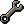
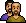

In this release
Most of us have dozens of Hub plugins installed by now, and finding the one you want meant scrolling a long list, while a plugin the Hub had marked as broken looked just like the rest. 2.6.55 rebuilds the installed plugins list: sort it by recently used or by author, show only the plugins that are on, install Hub plugins straight from the search box, and see on each row whether a plugin failed to start or has an update. The Hub tab gets its own sort menu, and a banner tells you when the Hub changes the status of a plugin you have installed. Hardware ID spoofing is now something you turn on in the launcher, and the walker, camera and natural mouse each lose a way to get stuck. On the Hub there are five new plugins from Fourtifys, among them Phosani's Nightmare and Tormented Demons, plus fixes to Auto Fishing, Tithe Farm, Revenant Killer, Guardians of the Rift, Tempoross, CG Prep and 14 others.
A new installed plugins list

Open the Microbot plugin list and the search box now has a button next to it called Sort, filter and more. It holds everything that used to sit along the top of the list:- A-Z sorts by the plugin's own name and ignores the author tag in front of it.
- Recently installed puts the plugins you added last at the top. Updating a plugin doesn't move it, so a plugin you installed months ago stays where it was.
- Recently used puts the plugins you turned on last at the top. If you switch between three or four plugins every day, they're the first rows you see.
- By author groups plugins under a header per author tag, with a "No author tag" group at the end.
- Only on hides every plugin that is off. The number in brackets tells you how many are on.
- Local Plugins... opens the window from 2.6.53 for adding and updating plugin JARs.
Your choice is remembered. Each row now has a status line that says what's going on with that plugin, for example "Failed to start", "Not loaded", "Turned off by its author", "Turned off on the Microbot Hub" or "Confirmed broken". When a Hub plugin has a newer version, an Update button shows on its row, so the pop-up that listed outdated plugins at startup is gone. A "2 to fix" chip shows above the list only while something needs your attention.
You type "agil" in the search box to find an Agility plugin. Nothing installed matches, so the list is empty, and you go to the Hub tab and search again.
The list says no installed plugin matches and shows "Microbot Hub: 3 matches" underneath, each with an Install button. You install one without leaving the list.
Sort the Hub tab, and read each plugin's state
The Microbot Hub tab gets the same kind of menu button next to its search box. Pick Installed first to see what you already have at the top, Newest to see what was added to the Hub lately, or A-Z. Open plugin folder... moved into this menu from the top bar. The sort you pick is saved per profile, so your main account and your alt can each keep their own.
Cards for plugins you have installed now say their state in words: "Installed", "Update available", or the Hub's own reason when a plugin is blocked. A plugin that needs a newer client used to show "Confirmed broken" like a plugin that really is broken. It now says "Requires client" with the version it needs, and a plugin turned off by the Hub team says "Turned off on the Microbot Hub". An update only shows when the Hub has a newer version than the one you have.
Know when an installed plugin's status changes
Hardware ID spoofing is now opt-in

Spoofing sends a random device ID instead of your real one when you log in. It used to be on for everyone who started Microbot from the launcher. From launcher 3.2.29, a new install starts with the Spoof hardware IDs box unticked, and 2.6.55 follows that box. If you already use the launcher, your current setting is kept, so nobody is switched to their real IDs without knowing it.- To spoof, tick Spoof hardware IDs in the launcher and start the client again. Spoof device ID under Microbot > General only works while that box is ticked.
- If you leave the box unticked, the client says nothing about it. That's your choice.
- If you ticked the box and spoofing didn't take effect, you get one line in game chat after logging in, for example: "Spoofing is not active, so this login sent your real device details. Restart the client from the Microbot launcher and check that Spoof hardware IDs is ticked. Already ticked? Report it in the Microbot Discord."
Walking, camera and mouse fixes
Other client fixes
Five new plugins from Fourtifys
Each of these plugins has a page on the Hub that lists what you need and how to set it up. When one stops, it tells you why and what to do next in game chat, for example "Out of Shark in the bank: restock it or lower Food count", and it waits while you pause scripts with the header pause button.
Kills Phosani's Nightmare. It prays against her melee, magic and ranged attacks, keeping the right prayer while her curse swaps them, and steps off her rifts, spores, flowers and surges. It kills husks, parasites and sleepwalkers, drinks a cure while a parasite grows, and charges the totems with your magic gear, with an optional thrall and Death Charge. In her last phase it uses your special attack weapon first. Between kills it picks up the loot and starts the next kill while you still carry enough supplies. When you run low it teleports to Ferox Enclave with a Ring of dueling, banks, restocks, drinks from the pool and comes back with Drakan's medallion.
Kills Tormented Demons in a single-combat room of the Ancient Guthixian Temple. It switches your protection prayer to the demon's attack style, swaps to your next gear set when the demon starts protecting against the style you're using, and steps off fire bombs. It eats and drinks at the percentages you set and loots drops above a minimum value. When supplies run out it banks at Ferox Enclave and comes back by temple teleport. You fill in at least two of the Magic, Ranged and Melee gear sets, and a missing item stops it with a message such as "Missing Ghrazi rapier (22324)". In 1.0.1, changing a setting after a death no longer wipes your kill count and runtime.
Runs full Barrows trips. It travels by Barrows teleport tablet, Mort'ton teleport scroll, the Arceuus Barrows Teleport, Morytania legs 3 or 4, or the Shades of Mort'ton teleport. It kills each brother with the right protection prayer and gear, solves the tunnel puzzle and loots the chest, then banks at Ferox Enclave and goes again. If it has to stop in the middle of a fight, it teleports out first so a brother can't keep hitting you. In 1.0.1 it handles a chest reward that doesn't fit in your inventory, and you can start it with the bank already open.
Runs laps on 16 courses: the Gnome Stronghold, the rooftop courses from Draynor Village to Ardougne, the Agility Pyramid, Brimhaven, both Colossal Wyrm courses, the Wilderness course, Prifddinas and Ape Atoll. It picks up marks of grace, eats at the Hitpoints level you set, and can cast High Level Alchemy between obstacles, which works properly as of 1.0.1. If your level is too low for the course, it tells you, for example "Agility 60 needed for this course; choose a lower course".
Mines gem rocks in the Shilo Village gem mine, on the surface or underground. When your inventory is full it banks the uncut gems at Shilo Village bank or the mine's deposit chest and walks back, and it fills and empties a gem bag if you carry one. On a free-to-play world it stops with "Shilo Village is members-only. Switch to a members world".
Plugin updates
- Auto Fishing 1.0.14: one player fishing Sacred eels kept the Sandworms in a Tackle box, as the game allows, and the plugin logged out on the first tick without saying why. Bait in a Tackle box and Sandworms now count, and if you really are out of bait the plugin tells you what's missing and where to put it. In 1.0.13 it also closes the level-up screen, which used to stop fishing at Barbarian Village until you turned the plugin off and on.
- Tithe Farm 1.1.18: on lanes 1 and 2 the character ran about 20 tiles from one end of the lane to the other several times a minute, because it went by plant number. It now waters and harvests the nearest plant that's due.
- Revenant Killer 2.0.14: wearing a Ring of wealth instead of a Ring of dueling sent the plugin back and forth to the bank for minutes, and could pull you out of the caves mid-fight. At the bank it now swaps a wrong ring for a Ring of dueling and a wrong or uncharged amulet for a charged Amulet of glory, and puts yours back in the bank. An Amulet of eternal glory is left on.
- Guardians of the Rift 1.5.15: with Mode set to CATALYTIC, the plugin still went mostly to elemental guardians, 63 elemental energy to 7 catalytic in one player's round. CATALYTIC is now respected, and ELEMENTAL and BALANCED pick altars by rune type.
- Tempoross 2.24.10: when a mast repair interrupted loading the cannon, the plugin stood at the totem with 16 cooked fish while fires burned and the storm won. It now puts the fires out and loads the cannon again.
- CG Prep 1.8.2: in the Hunllef fight it moves with the game's own pathing, never stands under the boss and clicks less. The camera no longer overshoots while turning, it stops praying against melee monsters that can't reach you, a cursor move that fails no longer stalls the fight, deaths show in the overlay, Reward Chest retries are capped, and there's a new Show overlay setting.
- Crafting 1.0.7: with Fletch into Bolt Tips on, the plugin banked your cut rubies and stopped with "You've ran out of materials!". It now fletches cut gems into bolt tips.
- Rogues' Den 1.0.4: one player's character stood in front of the trapped wall for about 18 minutes, clicking to walk, without ever searching it. It now searches the wall from the tile next to it, and if a maze tile can't be reached it turns the camera, tries again and tells you.
- Random Event Handler 2.1.3: a Mysterious Old Man or Rick Turpentine could stand next to you and never be dismissed if no bot script was running, for example when only the walker was active. They're now dismissed whenever the handler is on, as long as you aren't using the mouse or keyboard at that moment. In 2.1.2 it also stopped trying to dismiss an NPC that had already left.
- Barrows 2.5.27: without a Ring of dueling in the bank, the plugin stood still with its toggle still on and the reason only in the log. It now shows a message such as "Barrows stopped: no Ring of dueling in your bank", turns itself off, and says how many you need and which setting to change.
 Blast Furnace (BlastoiseFurnace) 1.2.6: with run off, the plugin stopped waiting before the ore reached the conveyor belt and lost about half the coal for the trip. It now waits for the walk, and stops if coal from the coal bag stays in your inventory.
Blast Furnace (BlastoiseFurnace) 1.2.6: with run off, the plugin stopped waiting before the ore reached the conveyor belt and lost about half the coal for the trip. It now waits for the walk, and stops if coal from the coal bag stays in your inventory.- AIO Magic: with natural mouse on and several of the same item in your inventory, alching never cast. It now alchs the item that's already in the right slot.
- MicroAgility 1.3.5: stuck in the Brimhaven Agility Arena out of reach of the rope swing, the plugin logged "No agility obstacle found" forever. After about 5 seconds of standing still it now stops and tells you to leave the arena or walk back next to the rope swing by the entrance ladder.
- Gem Crab Killer 1.0.7: with Use Inventory Setup? on, it walked straight to the crab without your setup. It now loads the setup at the bank first, and if that fails it lists what's short, for example "not enough Shark, Prayer potion(4)".
- Bank's Shopper 1.4.6, Woodcutting 1.8.14, AutoLooter 1.2.1, Firemaking Plus 0.2.5, Auto Smelting and Frosty RC: no more errors in the moment your position is unknown, such as during a world hop, a Forestry event or right after you start the plugin.
For script developers
Rs2Npc.pickpocketand theRs2Npc.interactoverloads returnfalsefor a null NPC instead of throwing.Rs2TileObjectModel.getMinimapLocation()can be called from a script thread again; it reads on the client thread for you.- A route clear without a reason, such as
Rs2Walker.setTarget(null), now logs at INFO, so it stays out of game chat. Pass a reason if you want it to show up in the log with context. - The 7-argument
MicrobotPluginConfigurationDescriptorconstructor is back for plugins compiled against it. PluginManager.startPlugin(plugin, countsAsUse)feeds the Recently used sort, which is saved in~/.runelite/microbot/plugin-usage.json.- The HWID agent registers nothing when the JVM is started with
-Dmicrobot.hwid.spoof=false. A launcher that attaches the agent without that flag still gets spoofing. - Two merges of
mainintodevelopment, with no change for players.
How to update
Restart Microbot to get client 2.6.55. The new sort and filter menu is next to the search box in the Microbot plugin list and in the Microbot Hub tab. To keep or turn on hardware ID spoofing, check the Spoof hardware IDs box in the launcher. The new and updated plugins show up in the Microbot Hub panel inside the client.
Game images © Jagex Ltd., via the Old School RuneScape Wiki.